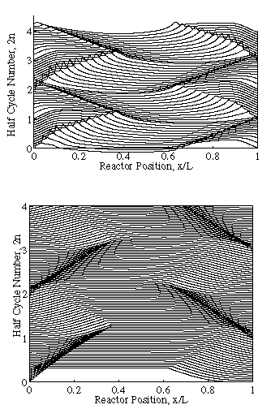
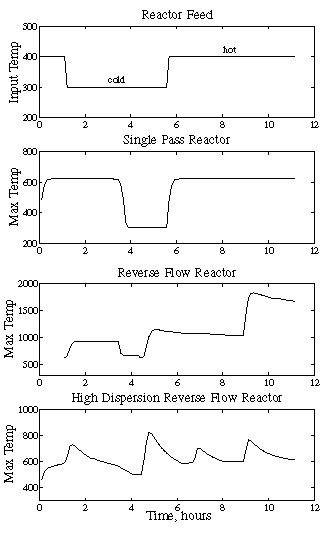

Experiments are also being currently performed to quantify thermal dispersion in fixed beds.
This figure details a numerical simulation
for the reverse-flow reactor under lean fuel conditions. Each horizontal
line corresponds to a snapshot of the bed as a function of time. It is
clear to see the presence of an ignited zone inside of the bed (shown by
the elevated temperature bump) which oscillates back and forth due to gas
flow. This demonstrates the advantage of the reverse-flow reactor over
a traditional fixed bed reactor, which would extinguish in a time of about
3 hours (typical thermal front residence time).
This figure details a numerical simulation
for the reverse-flow reactor under rich fuel conditions. Each horizontal
line corresponds to a snapshot of the bed as a function of time. It is
clear to see that there are temperature spikes which develop upon flow
reversal. These spikes travel back and forth inside the bed but remain
compact as the ratio of gas convection to thermal conduction is small.
These spikes also make the bed difficult to control. This demonstrates
the disadvantage of the reverse-flow reactor which would run away in a
time of about 5 hours (corresponding to 5 half-cycle periods).
Cross-section of the high-dispersion
reverse-flow reactor. Cylindrical metal rods have been placed inside of
the bed to enhance its axial thermal dispersivity.
For simplicity, analytical and numerical
models focus on a unit cell around one rod.

This figure details a numerical simulation for the high-dispersion reverse-flow reactor under rich fuel conditions. Each horizontal line corresponds to a snapshot of the bed as a function of time. It is clear to see that the temperature spikes which develop upon flow reversal are now smoothed throughout the bed. In fact, a cyclic steady state develops in the bed after about 100 hours, and the reactor does not experience runaway. This demonstrates the superiority of the reverse-flow reactor over its traditional counterpart.
This figure details a numerical simulation
for the high-dispersion reverse-flow reactor under lean fuel conditions.
Each horizontal line corresponds to a snapshot of the bed as a function
of time. It is clear to see that the presence of the high thermal dispersivity
has smoothed out the sharp temperature profile. After about 100 hours,
the bed will extinguish. This time is over an order of magnitude greater
than the standard fixed bed reactor.

Feed condition for a numerical simulation.
The hot feed is 400 K and 2% CO, while the cold feed is 300 K with no CO
fuel.
The single pass reactor extinguishes during cold feeds in about 3 hours.
The reverse-flow reactor runs away
during rich feeds in about 5 hours.
The high-dispersion reverse-flow reactor
remains stable and the temperature is well banded for the duration of the
simulation. If one adopts a control algorithm, one could expect even better
performance.